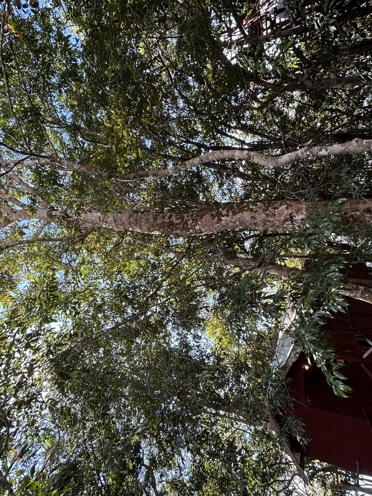

Most visitors arrive at Vista do Lago for the river, the dolphins or the jungle. But there is something standing quietly between the wooden bungalows that stops people mid-step: a grove of rubber trees so old, so tall and so rooted that they seem to belong to a different era of the Amazon entirely. They do.
Planted by Hand, More Than a Century Ago
The rubber trees of Vista do Lago are over 100 years old. They were planted by Seu Pedro Alves da Silva, the uncle of the man who would later build this lodge on the same land. "He planted them and never cut them," recalls the family, now in their 70s. "We call it sagrar — to make the cut, to draw the latex. He chose not to."
The practice of sangria — tapping rubber trees for their latex — was once the economic backbone of the entire Amazon. The rubber boom of the late 1800s transformed Manaus into one of the wealthiest cities on earth, built on the backs of seringueiros who worked deep in the forest. Seu Pedro lived through the tail end of that era. He knew what these trees were worth. And still, he let them grow.

Three Generations, One Grove
When the land was eventually purchased to build what would become Vista do Lago Jungle Lodge, the new owner — Seu Pedro's nephew — made his own mark on the grove. "When I bought the land, that's when I started the sangria, to make crafts," he explains. Rings of latex, hardened and shaped by hand, became pieces of Amazonian artisanry. Today that practice has paused. The lodge came first. "Nobody has tapped them since we opened. They are resting."
Three generations have watched over this grove. The trees have outlived arguments, floods, seasons of plenty and seasons of scarcity. They keep standing.
The Brazil Nut Trees: Giants of the Same Era
The rubber trees are not alone. Scattered across the same grounds stand more than 15 castanheiras — Brazil nut trees — from the same generation, planted in the same era by the same hands. They reach between 40 and 70 metres into the sky, taller than most buildings in the city. "I am 70 years old and they were already this size when I was born," says the family elder. "When my uncle died — and that was more than 70 years ago — they were already enormous."
Every year, the castanheiras produce fruit. Heavy, woody pods fall from height with a force that demands respect. Inside each pod, the Brazil nuts we know from supermarkets around the world. Here, they fall on the same ground where they have always fallen, collected by the same family that has always collected them.
A Living Forest, Not a Decoration
What makes the grove at Vista do Lago different from any botanical garden or eco-resort landscaping project is precisely this: nobody designed it. Nobody curated it for guests. It was simply here, cared for by people who loved it before tourism was a word anyone in Acajatuba used. The trees stand because a man named Seu Pedro chose not to cut them, and because every generation after him made the same quiet choice.
When you walk through the grove in the early morning, light cutting through the canopy, the smell of earth and bark and river in the air, you are walking through a hundred years of decisions made in favour of preservation. That is not a small thing.
Can Guests Visit the Grove?
Yes — the grove is part of the lodge grounds and guests are free to walk through it at any time. The family is considering guided visits that include the history of rubber extraction, a demonstration of the sangria technique and the story of the castanheiras. For now, the grove is simply there: open, quiet and extraordinary.